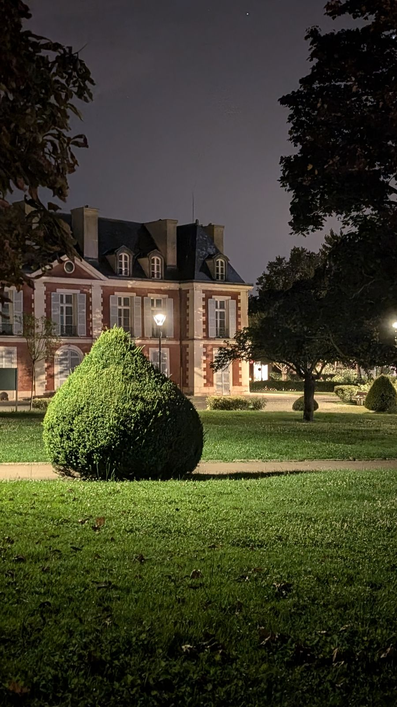
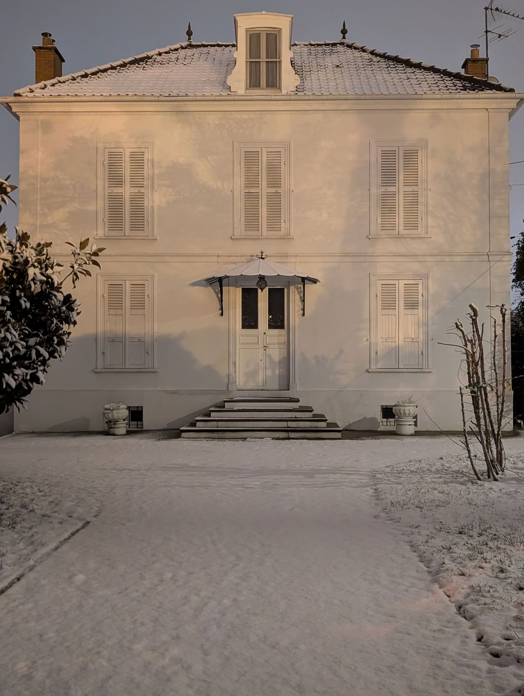
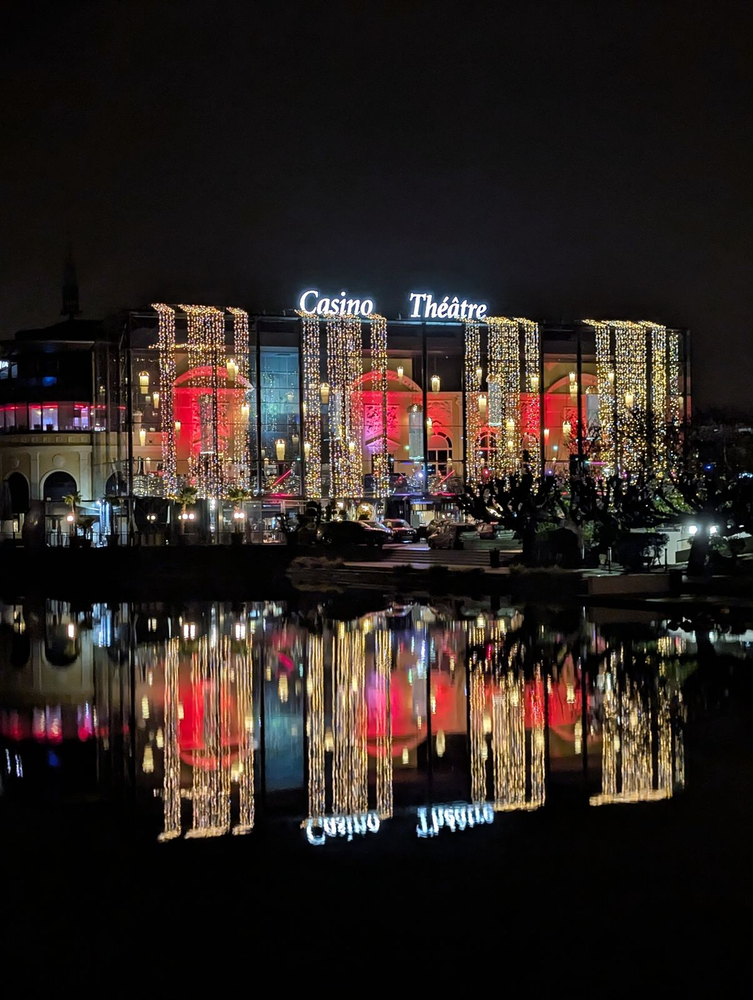

Eglise Saint Gratien
Church built in 1860.
Place de la mairie, 95210
Saint-Gratien, France

Catinat's Castle
Castle built in 1610.
14-18 Av. Gabriel Péri, 95210 Saint-Gratien, France

Princess Mathilde's Castle
Bought by the princess in 1851.
Saint-Gratien, France

Enghien-les-Bains Casino
Casino built in 1909-1910.
Avenue de Ceinture, 95880
Enghien-les-Bains, France